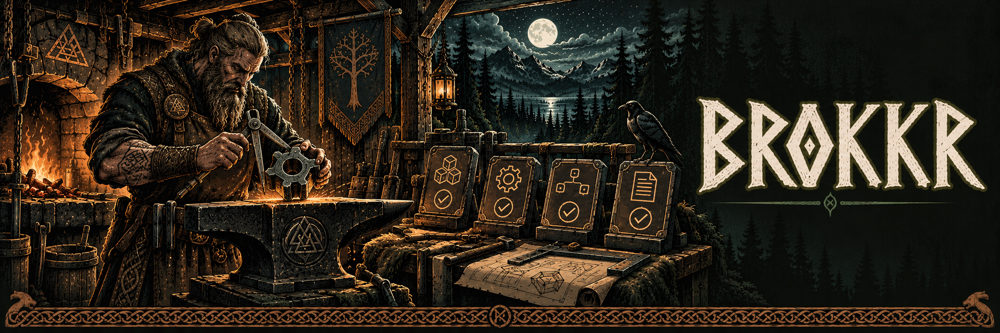

Define the harness
Select versioned engineering harnesses and resolve the skills and configuration needed for a task.

v0.1.0 · Experimental source release
Engineering harnesses and deterministic verification with retained evidence.
Select versioned engineering harnesses and resolve the skills and configuration needed for a task.
Run configured checks with explicit command and artifact policies. Preserve blocked and incomplete outcomes.
Produce reports, logs and evidence manifests that other tools can inspect without relying on an agent’s summary.
Brokkr is a standalone CLI and SDK for engineering harnesses and verification. It does not schedule agents. Mimir and Sindri consume its results without replacing its verdict.
Node.js 25 or newer, pnpm and Git.
Clone Brokkr and run these commands from its root directory.
pnpm install --frozen-lockfile
pnpm build
node apps/cli/dist/bin.js --helpRead the full project guide for configuration and service connections.
What we have verified
Included in the October 17 passing package run and the October 18 counter execution. Verification reports remain separate from model review decisions.
Explore the tools, setup guides and release notes on each project site.